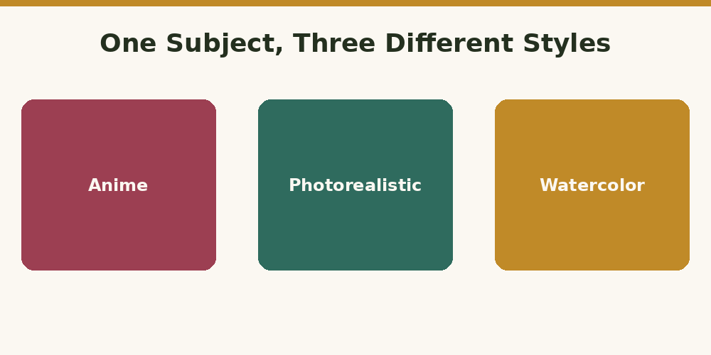

How to Write AI Art Prompts in Different Styles
Published August 2026

The same subject can look wildly different depending on the style words in your prompt. A "fox in a forest" can be a soft storybook illustration or a razor-sharp nature photograph — the difference is entirely in how you describe the style. Here's how to nail three of the most popular ones.
Anime style
Anime prompts respond well to specific visual vocabulary rather than just the word "anime" on its own. Try combining it with cues like cel-shaded, vibrant colors, expressive eyes, or a named studio-inspired look like Studio Ghibli-inspired.
Example: "A young adventurer standing on a cliff overlooking a valley, anime style, cel-shaded, Studio Ghibli-inspired, vibrant colors, dramatic sky."
Photorealistic style
Photorealistic prompts benefit from camera and lighting language — the same terms a real photographer would use. Words like shot on DSLR, 85mm lens, shallow depth of field, and natural lighting push the model toward convincing realism rather than an illustrated look.
Example: "A young adventurer standing on a cliff overlooking a valley, photorealistic, shot on DSLR, 85mm lens, golden hour lighting, shallow depth of field."
Watercolor style
Watercolor prompts lean into softness and texture — think soft edges, bleeding colors, and paper texture. Naming the medium explicitly (watercolor painting, not just "painting") keeps the model from defaulting to a generic digital-art look.
Example: "A young adventurer standing on a cliff overlooking a valley, watercolor painting, soft edges, bleeding colors, visible paper texture, muted palette."
The pattern to remember
Notice the subject stayed identical in all three examples — only the style-specific vocabulary changed. That's the fastest way to explore different looks: lock in your subject and composition first, then swap out just the style phrase to see the range of what's possible.
Want to try this yourself without memorizing style vocabulary? Try the PromptNest generator — pick Image Prompt mode, choose a style from the dropdown (including Anime and Watercolor), and it builds the right phrasing for you automatically.